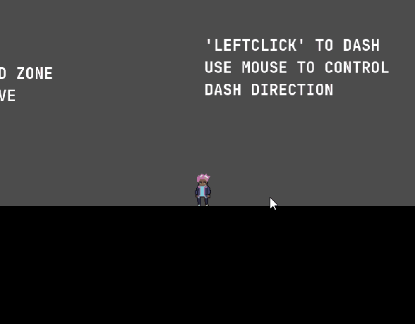
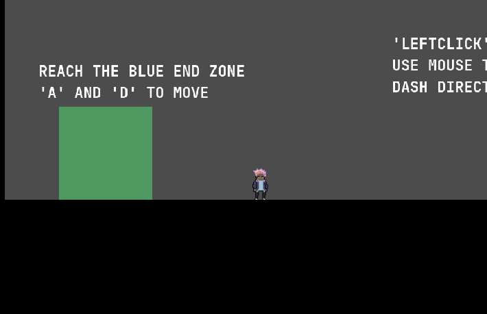
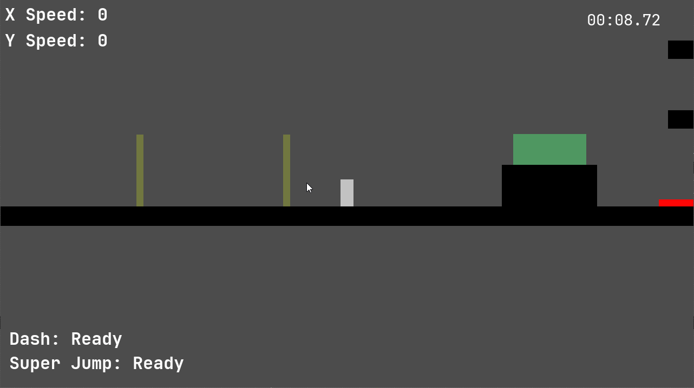

Dev Log 7: Beta 3 Release
2/21/23
New week and I'm back with another devlog (a bit shorter this time). In this devlog we'll see some of the new features in Project Movement, and discuss level design and movement in the context of some of the feedback we've received after releasing Beta 3. There's also a slideshow presentation that goes over some player stats and other details about the release.
New Features
Showing off some of the new stuff this week, we have implemented an animated
character sprite.

And a cool ghost trail effect for the dash ability.

Speaking of the dash, its implementation has changed yet again. Some day when we have
a finalized version of the mechanic and I have the will to do it, I'll go in depth on
creating the dash in Project Movement. Because it is the game's main movement ability, we really
want it to feel good to use.
I learned how to add some simple particles in Godot, so now the checkpoints
give extra visual feedback in addition to auditory feedback when they have
been activated. 
The Main menu has been changed to no longer use default theming from Godot. I think
it looks nicer. And in order to better support having more levels we've moved
the list of levels from the main menu to a dedicated level select screen.

 Three new levels have also been added. Try out the game to see what they look like!
Their names are: "STARTER," an easier level applying some of the stuff in the tutorial;
"LETSGO," an experiment with moving hazards and terrain that has turned out to be a bit
more difficult; and "PILLARS," which is intended to be the most difficult level in the
game, featuring multiple very precise jumps, small platforms, and hazards abound.
Three new levels have also been added. Try out the game to see what they look like!
Their names are: "STARTER," an easier level applying some of the stuff in the tutorial;
"LETSGO," an experiment with moving hazards and terrain that has turned out to be a bit
more difficult; and "PILLARS," which is intended to be the most difficult level in the
game, featuring multiple very precise jumps, small platforms, and hazards abound.
Feedback: Levels and Air Control
We're glad the previous changes we have made (like click to dash and double jump on the same key) have eliminated past complaints and points of frustration for players. While we haven't gathered a ton of feedback, some of the most common pain points stem from the level design and how the movement mechanics interact with it. In a previous devlog I may have mentioned that level design is going to be a significant challenge, and it certainly is turning out to be. The movement mechanics keep changing since our design was never concrete, so it is difficult to make levels that harmonize.
Specifically, we receieved feedback about two general cases: first that in "LETSGO" it was hard to see where to go, and frustrating to get past the moving obstacles, and that in "PILLARS" it too difficult for a game with mechanics like ours. In order to address these concerns, we plan to re-evaluate our levels and make further adjustments to the parameters of our player movement. Players wanted more air control if they were going to be tested by levels like "PILLARS".
So far we've covered lateral motion with the dash, keeping it with bunny hopping, and added an effective way of moving vertically with the super jump. But there is no way to slow down or even stop quickly, which multiple players expressed they would like to have after playing "PILLARS". In Source movement, one of the inspirations for this game, if the player is moving through the air simply tapping in the opposite direction of motion completely halts the character's horizontal velocity. When implementing the movement in our game, I thought that this wouldn't make sense, and would look pretty weird, so decided against it. But I think I can agree that giving the player more air control would be beneficial, at least for slowing down.
It shouldn't be hard to do, either. Getting just a little bit technical, we have two parameters of interest in the player
controller: h_accel_air and max_h_air_influence_speed. One
controls how fast the player can change their velocity through direction inputs while in the air.
The other controls the maximum horizontal velocity the player can reach while changing their
velocity via directional input when in the air. Currently, h_accel_air
is set to around a tenth of the grounded acceleration, and max_h_air_influence_speed
is set to around a third of the maximum grounded movement speed.
So fixing this might be as simple as
increasing h_accel_air while leaving max_h_air_influence_speed
unchanged. My concern is, however, that if the player can accelerate quickly in the
air to slow down, it will feel weird to not be able to accelerate past a smaller
velocity limit.
Hopefully that longer discussion illustrates the complexities of movement in a game where the whole game is basically just movement. There's a lot of factors to consider with each and every mechanic, and no way of telling how players will react to them. We're not that good at judging the movement either since while developing the game we have gained more familiarity with it and how it is supposed to work.
Thanks for reading.